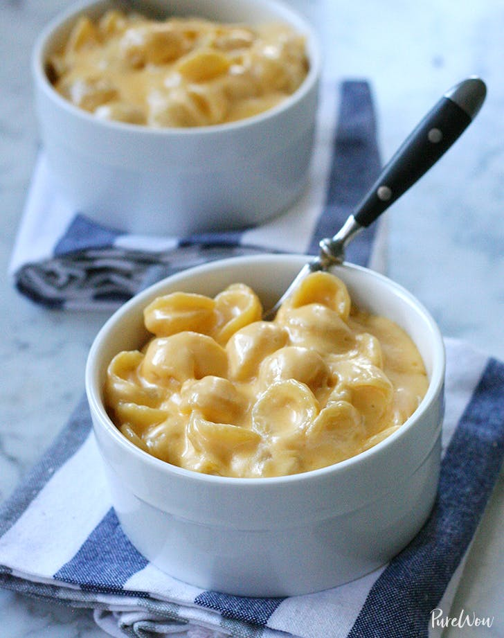

Mac and Cheese

Description
Well, this one is an obvious favorite. Who doesn't like mac and cheese? If you don't, then why the heck are you even here?
I don't know why you're even reading this part. Just skip ahead to the recipe. Oh, and friendly reminder,
gluttony is a cardinal sin. Tweet tweet.
Ingredients
- 1 lb. dried elbow pasta
- 1/2 cup unsalted butter
- 1/2 cup all-purpose flour
- 1 1/2 cups whole milk
- 2 1/2 cups half and half
- 4 cups grated medium sharp cheddar divided
- 2 cups grated Gruyere cheese divided
- 1/2 Tbsp salt
- 1/2 tsp black pepper
- 1/4 tsp paprika
Steps
- Preheat oven to 325 degrees F and grease a 3 quart baking dish (9"x13"). Set aside.
- Bring a large pot of salted water to a boil. When boiling, add dried pasta and cook for 1 minute less
than the package directs for al dente. Drain and drizzle with a little bit of olive oil to keep from sticking.
- While water is coming up to a boil, grate cheeses and toss together to mix, then divide into three piles. Approimately 3 cups for the sauce,
1 1/2 cups for the inner layer, and 1 1/2 cups for the topping.
- Melt butter in a large saucepan over medium heat. Sprinkle in flour and whisk to combine. Mixture will look like very wet sand.
Cook for appoximately 1 minute, whisking often. Slowly pour in about 2 cups or so of the milk/half and half, while whisking constantly,
until combined and smooth.
- Continue to heat over medium heat, whisking very often, until thickened to a very thick consistency. It should almost be
the consistency of a semi-thinned out condensed soup.
- Remove from the heat and stir in spices and 1 1/2 cups of the cheeses, stirring to melt and combine. Stir in another 1 1/2 cups
of cheese, and stir until completely melted and smooth.
- In a large mixing bowl, combine drained pasta with cheese sauce, stirring to combine fully. Pour half of the pasta mixture
into the prepared baking dish. Top with 1 1/2 cups of grated cheeses, then top that with the remaining pasta mixture.
- Sprinkle the top with the last 1 1/2 cups of cheese and bake for 15 minutes, until cheese is bubbly and lightly golden brown.
"And on the secret 8th day, God created fat, so man could enjoy mac and cheese." - Kraft 4:20
Tweet tweet.
Homepage